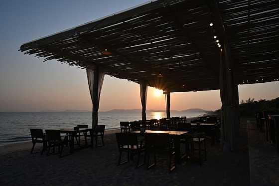
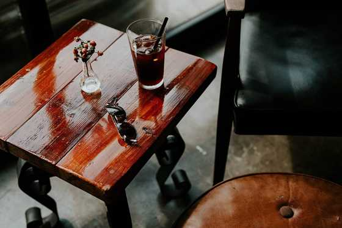
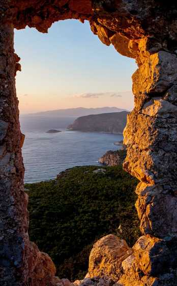
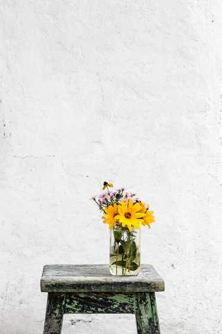
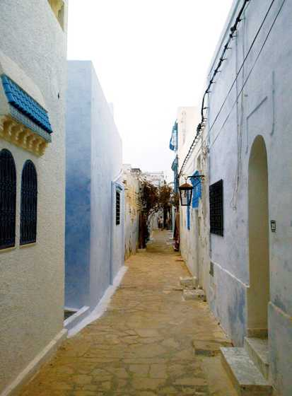
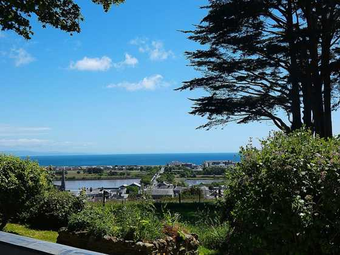
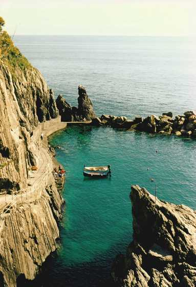
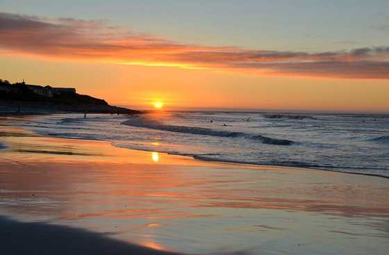
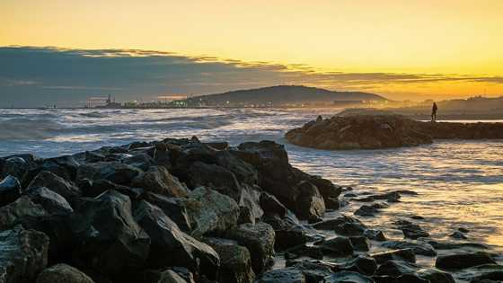

静岡県下田市 ・ 小さなカフェ
白い店内で、紅茶とスコーンの
ゆっくりティータイム。
下田の町で長く親しまれてきた、居心地のいい小さなカフェ「タイニー・ビー」のご案内です。

お店の由来・想い
Instagramのプロフィールでは「居心地のいい小さなカフェ」と紹介され、雑貨も扱うお店です。2026年9月の投稿には「おかげさまで30周年」とあり、長く愛されてきたことがうかがえます。手作りのスコーンやお菓子が特徴とされ、紹介サイトでは「白を基調とした明るい店内で素敵なティータイムを」と案内されています。
店名の意味や創業の経緯は確認できていないため、記載していません。上記以外の言い回しは制作側の表現です。




メニュー
2023年時点の紹介サイトの掲載をもとにした参考情報です。現在の内容・価格は異なる場合があるため「準備中」とし、最新情報はInstagramでご確認ください。

口コミ
以下は制作側が作成したイメージ例であり、実在のお客様の声ではありません。
イメージ例
白くて明るい店内で、紅茶をゆっくり楽しめました。スコーンがほっとする味でした。
イメージ例
駅から近く、町歩きの途中に立ち寄りやすい場所です。雑貨を見るのも楽しい時間でした。
イメージ例
小さなお店ならではの落ち着いた雰囲気で、のんびり過ごせました。



アクセス・ご案内
| 住所 | 〒415-0021 静岡県下田市一丁目18-12 海善寺ビル |
|---|---|
| 電話 | 準備中 |
| 営業時間 | 準備中 |
| 定休日 | 準備中 |
| @tinybee1217 |
営業時間などは変更されることがあるため、最新情報はInstagramをご覧ください。

